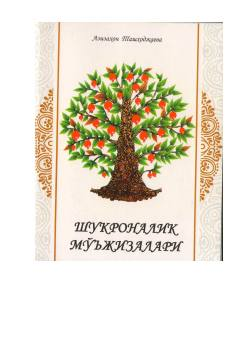

SMHayotdagi ne'matlarga shukronalik keltirish orqali qalb xotirjamligi va baxtga erishish sirlari.
Ushbu kitob insonlarga hayotdagi ne'matlarga shukronalik keltirishni o'rgatadi va qalb xotirjamligiga erishish yo'llarini ochib beradi. Muallif o'zining psixologik tajribalari va shukronalik tuyg'usini his qilgan ayollarning ta'sirli hikoyalari orqali o'quvchini ijobiy fikrlashga chorlaydi. Asar hayot sifatini yaxshilash va qalbni quvonchga to'ldirish uchun amaliy tavsiyalar beradi.